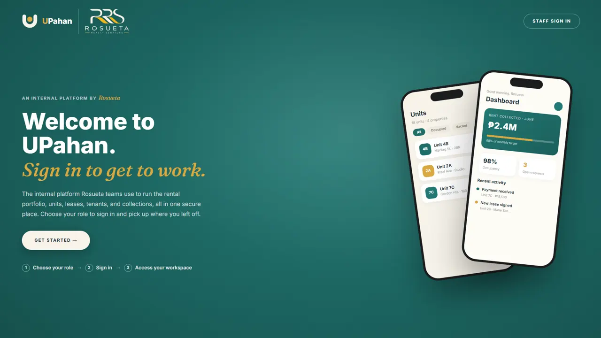
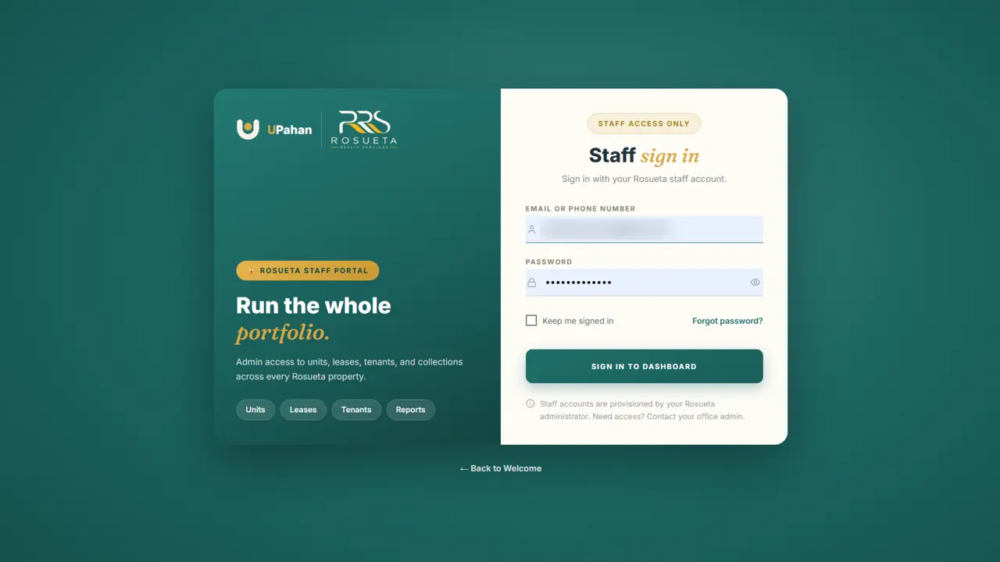
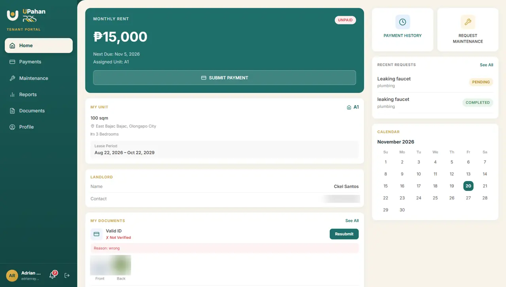
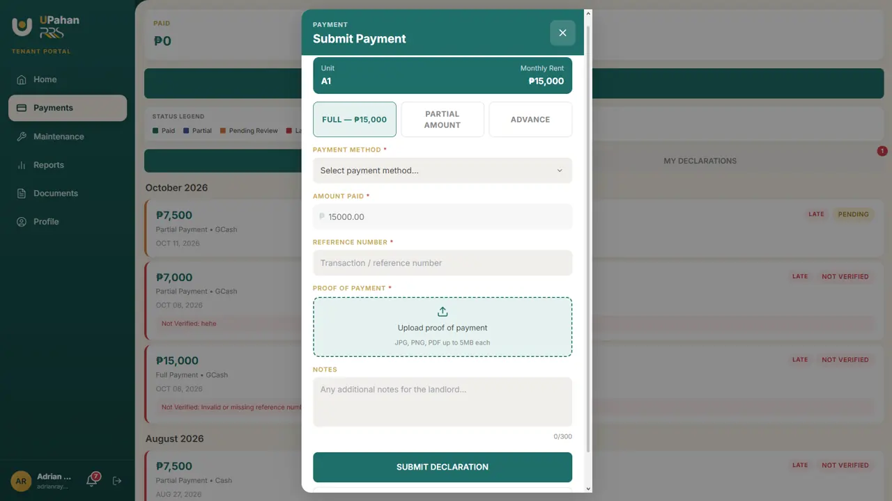
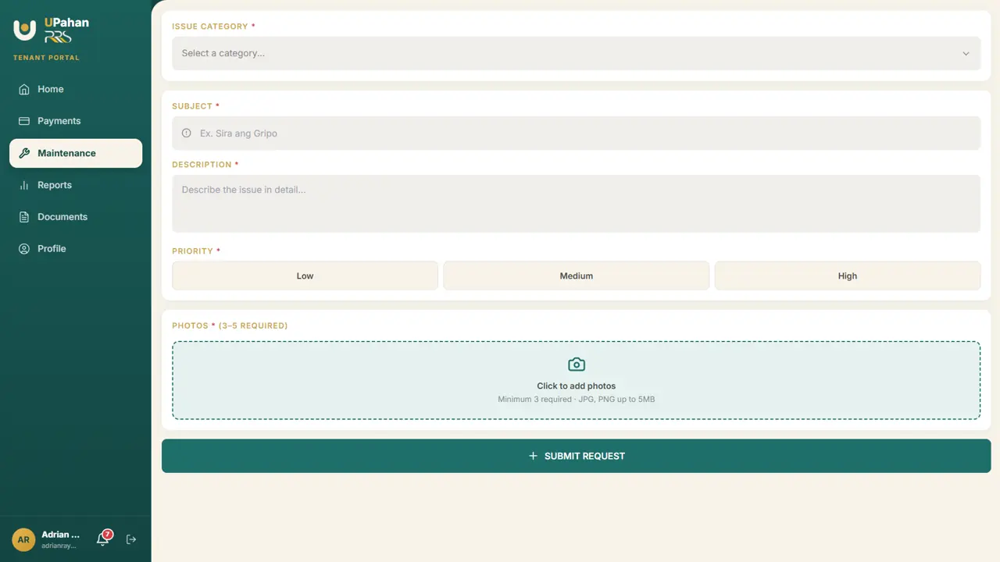
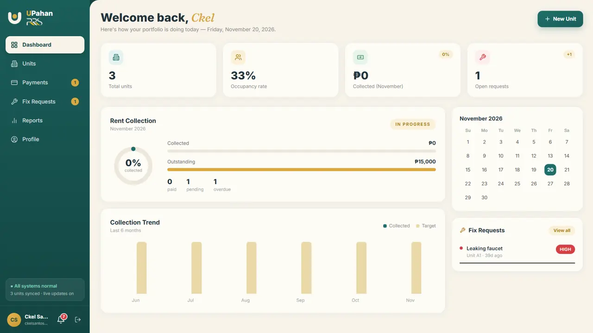
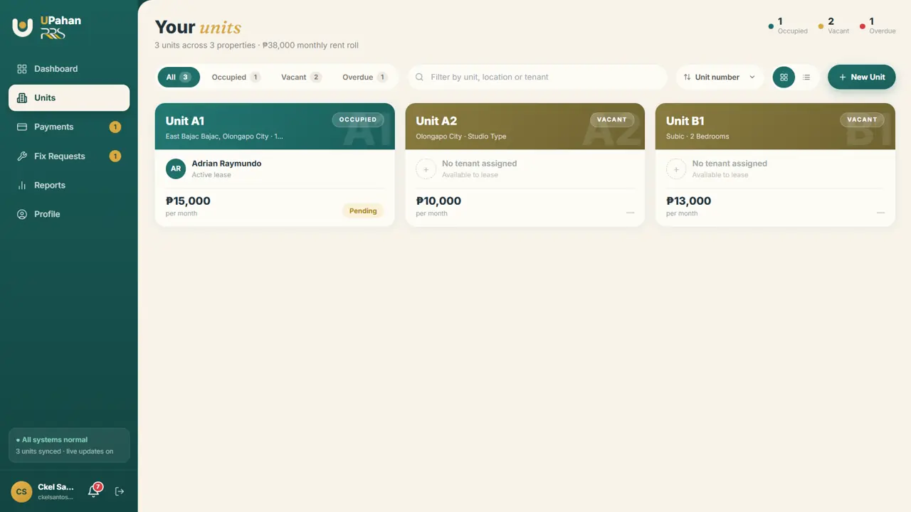
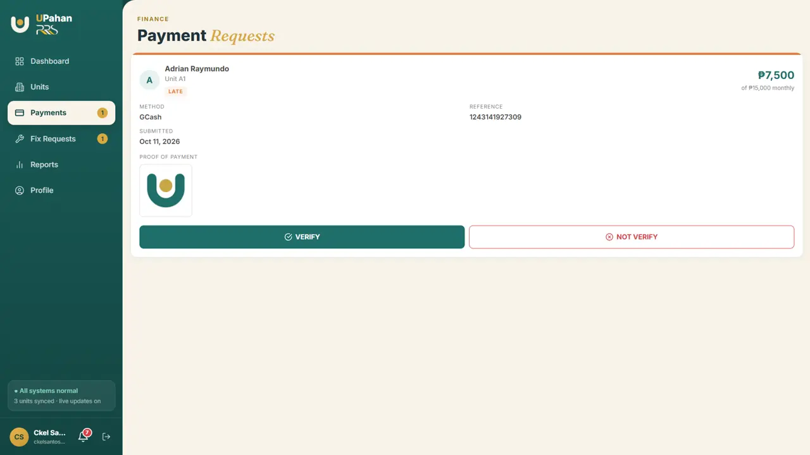
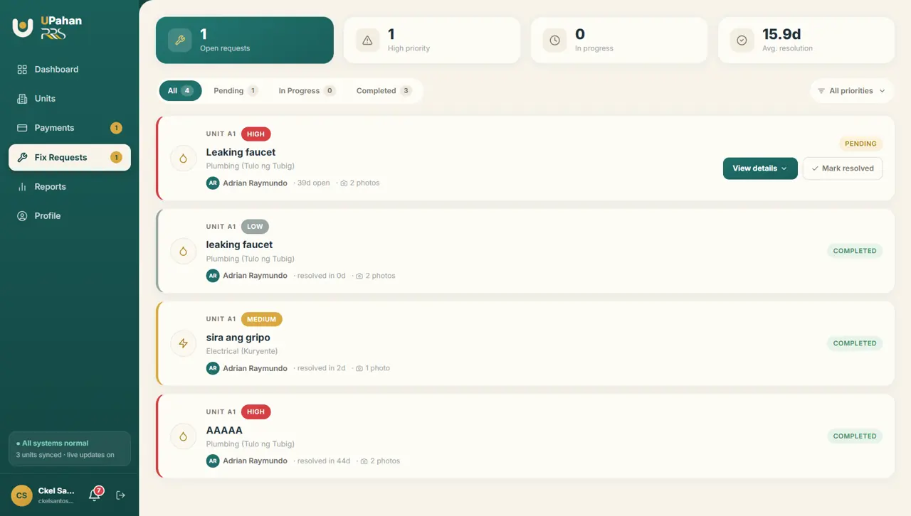
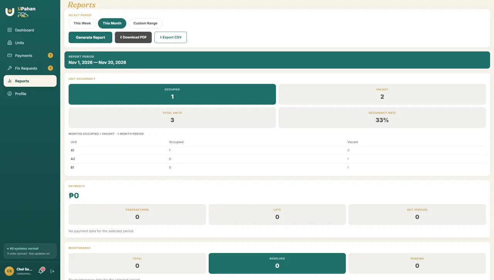

const developer = {
name: "Adrian N. Raymundo",
role: "BSCS student, developer",
school: "Gordon College",
city: "Olongapo City, PH",
skills: ["React", "React Native", "Supabase"],
focus: "Software for local businesses"
}
3rdYEAR
3PROJECTS
About & Skills
Background
I started my practicum filing loan notes and labeling folders at a local cooperative. That made me want to build the digital version of the same work, so I moved from paper records to code. I like apps that solve a real local problem, mobile development, and clean interfaces that non-technical staff can use without training.
Who I am
Course
BS Computer Science, 3rd Year (BSCS 3-A)
School
Gordon College, Olongapo City
Training
OJT at Olongapo Multi-Purpose Cooperative (OMPC), Loan and Multimedia departments
A web and mobile platform that moves Rosueta Realty Services's rental operations from paper and chat messages into one system. It covers property listings, tenant records, leases, payment tracking, and maintenance requests, with a portal for tenants.
An Android app built with React Native and Expo that tracks water flow in real time from a ZJ-S201 sensor on an ESP32 board. It detects leaks automatically, sends push notifications, and uses Google Gemini to help diagnose water quality from what the user reports. It also has email OTP login, PDF report export, and dark/light mode.
React NativeExpoESP32Gemini AI
OJT project · OMPC
Online Loan Application & Admin Dashboard
A public loan application form for OMPC members and a secured dashboard where staff review, search, filter, and track applications. It replaces the paper loan note forms I used to process by hand.
FramerReactSupabase Auth & RLS
Case study
UPahan: rental property management
A web and mobile rent tracking and property management platform for Rosueta Realty Services in Olongapo and Zambales.
Project overview
The product
UPahan is a web and mobile app for tracking rent and managing properties. Its users are Rosueta Realty Services staff and the tenants who rent from them. It covers property listings (units), tenant records, lease agreements, payment tracking and verification, maintenance requests, document verification, and reports. Tenants get a portal for their lease, payments, and concerns.
Duration
2026
The problem
Rosueta handled rent tracking, tenant records, and repair concerns by hand, so records got lost and tenants could not check their own lease or payments.
The goal
Put Rosueta's rental operations in one system that staff manage and tenants can use from any device.
My role
Developer
Responsibilities
Property listings, tenant records, lease agreements, payment tracking, maintenance requests, the tenant portal, and contributions to the requirements, software design, system architecture, and UI design documents.

Welcome screen: a short pitch, a Get Started button, and three steps (choose your role, sign in, access your workspace).

Staff sign-in: one clear form, a show/hide password toggle, and a note on how to get an account.
Understanding the user
Research summary.
I started from how Rosueta handles rentals today: paper records, messages, and manual follow-ups. I assumed the main need was a better record system for staff. Looking closer at the workflow showed that tenants needed just as much, because they had no way to see their own lease or payments, or to report a problem and know it was received. That made the tenant portal a core feature, not an add-on.
Pain point 1
Records get lost or scattered. Tenant details and payments were kept by hand. UPahan stores tenants, leases, and payments in one searchable place.
Pain point 2
Tenants cannot see their own status. They had to ask staff about their lease or what they owed. The tenant portal shows lease details and payment history on any device.
Pain point 3
Repair concerns go untracked. A problem reported by message is easy to forget. Maintenance requests now have a status, so both sides can see what is open.
Persona and problem statement
Persona (representative user)
Maria, 29, tenant
Maria rents a unit and works full-time. She pays rent monthly and sometimes needs something repaired. Maria is a working tenant who needs to check her lease, see her payments, and report repairs from her phone because she cannot visit or call the office during work hours.
User journey map
1. Log in→2. View lease→3. Check payments→4. Report a problem→5. See its status
Goal: let a tenant do everything on this path without contacting the office. Each step is one screen, so nothing takes more than a few taps on a phone.
Refining the design
Mockups and final screens
Tenant side

Tenant home: rent due and a Submit Payment button first, then unit and lease details, recent requests, and a calendar.

Submit Payment: tenants choose full, partial or advance, add a reference number, and upload proof.

Maintenance request: category, subject, description, priority, and 3 to 5 required photos.
Staff side

Staff dashboard: key numbers first, then rent collection, a 6-month trend, a calendar, and open fix requests.

Units: filter by status, search, and switch between card and list view. Status colors match the labels.

Payment requests: staff see the amount, method, reference and proof, then Verify or Not Verify.

Fix requests: priority labels, status tabs, and quick actions (View details, Mark resolved).

Reports: pick a period, then view occupancy, payments, and maintenance, and export as PDF or CSV.
Visual design
One palette and one component set are used for both roles, so staff and tenants see the same look.
Type: a clean sans-serif for interface text, with an italic serif accent in page titles (for example "Your units").
Components: a left sidebar for navigation, white cards on a cream page, rounded buttons, pill-shaped status labels, and dashed upload areas.
Status colors: teal for paid, completed and occupied; gold for pending and vacant; red for unpaid, overdue and high priority.
Accessibility considerations
Accessibility and usability choices
Words as well as color. Statuses such as UNPAID, PENDING, COMPLETED and HIGH are written out, so meaning does not depend on color alone.
Clear forms. Every field has a visible label, required fields are marked with an asterisk, and upload areas state the file types and size limits.
Show/hide password on sign-in, and a plain "Staff access only" label so users know they are in the right place.
One main action per screen (Submit Payment, Submit Request, Verify), in a large button that is easy to tap.
Consistent layout. The same sidebar, cards and labels in both the staff and tenant portals.
Takeaways
Impact. UPahan puts Rosueta's rental records, payments, and maintenance requests in one system and lets tenants check their own lease and payments from any device.
What I learned.
Clear requirements and design documents up front make the build faster.
Design for the least technical user. Staff and tenants should not need training.
Staff and tenants need different views of the same data.
Understanding the real process matters more than the framework. My OJT paperwork taught me that before I wrote this code.
Next steps
Automatic payment checks. Today a tenant uploads proof and staff verify it. A payment gateway could confirm payments automatically.
Rent reminders. Send SMS or email reminders before the due date, in addition to in-app notifications.
More staff roles. Add roles with different access, such as a cashier who only handles payments.
Contact
Let's talk
Open to internships, projects, and questions. Email is the fastest way to reach me.